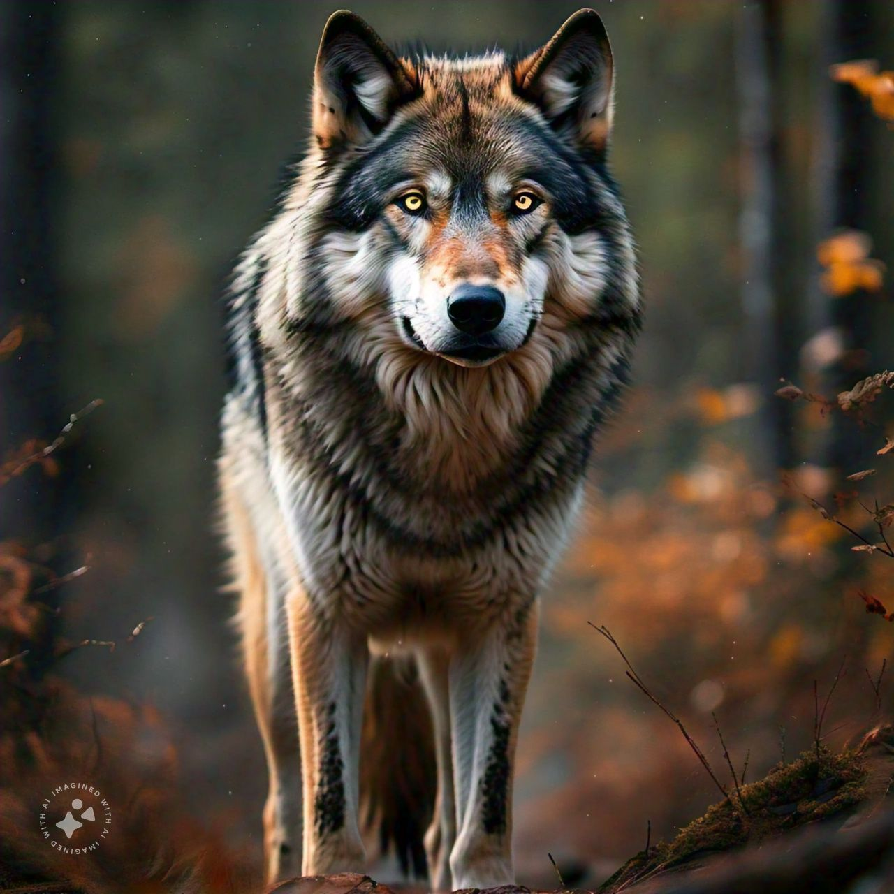

Welcome to Pet Guardian
Ensuring the safety and happiness of your pets
Dietary Chart for Pets
Dog
| Life Stage | Nutritional Requirements | Sample Meal Plan | Feeding Tips |
|---|---|---|---|
| Puppies (up to 12 months) | High protein, DHA, calcium for bone growth. |
1. Puppy kibble. 2. Optional: Cooked eggs or lean chicken. |
Feed 3-4 small meals per day. Keep fresh water available. |
| Adult Dogs (1-7 years) | Balanced protein, fats, carbohydrates, Omega-3, Omega-6. |
1. High-quality kibble. 2. Optional: Lean meats or vegetables. |
Feed 2 meals per day. Avoid raw bones and toxic foods. |
| Senior Dogs (7+ years) | Lower fat, moderate protein, fiber, joint supplements. |
1. Senior dog food. 2. Optional: Steamed veggies. |
Feed 2-3 smaller meals per day. Monitor weight. |
Cat
| Life Stage | Nutritional Requirements | Sample Meal Plan | Feeding Tips |
|---|---|---|---|
| Kittens (up to 12 months) | High protein, high fat, DHA, calcium, phosphorus. |
1. High-quality kitten food (wet or dry). 2. Optional: Small amounts of plain, cooked chicken or fish. |
Feed 4 small meals per day. Avoid cow's milk. |
| Adult Cats (1-7 years) | Balanced protein, fat, taurine, Omega-3, Omega-6, vitamins, minerals. |
1. 75% wet food + 25% dry food. 2. Optional: Cooked lean meat. |
Feed 2 meals per day. Avoid onions, garlic, chocolate. |
| Senior Cats (7+ years) | Lower fat, moderate protein, increased fiber, omega fatty acids, joint supplements. |
1. Senior cat food. 2. Optional: Soft, low-fat meats. |
Smaller, frequent meals. Consider soft food. |
Hamster
| Life Stage | Nutritional Requirements | Sample Meal Plan | Feeding Tips |
|---|---|---|---|
| All Stages | High fiber, low sugar, balanced proteins, and fats. |
1. Pellets, fresh vegetables. 2. Occasional fruits. |
Avoid citrus fruits. Provide fresh water. |
Cow
| Life Stage | Nutritional Requirements | Sample Meal Plan | Feeding Tips |
|---|---|---|---|
| Calves (up to 6 months) | High protein, vitamins, minerals, milk, grain starter. | 1. Milk or milk replacer. 2. Grain starter. |
Feed milk regularly. Introduce solid feed slowly. |
| Growing Cows | Balanced energy, protein, fiber, minerals. |
1. Grass, hay. 2. Optional: Corn, soybean meal. |
Ensure proper grazing and water access. |
| Adult Cows | High fiber, moderate protein, balanced minerals. | 1. Hay, silage. 2. Pasture grazing. |
Provide mineral supplements and fresh water. |
Goat
| Life Stage | Nutritional Requirements | Sample Meal Plan | Feeding Tips |
|---|---|---|---|
| Kids (up to 6 months) | High protein, calcium, vitamins A, D, E. | 1. Milk. 2. Grass, small grains. |
Ensure frequent feeding. Transition to hay gradually. |
| Growing Goats | Balanced protein, fiber, vitamins, minerals. | 1. Pasture, hay. 2. Grain supplements. |
Provide enough grazing area and fresh water. |
| Adult Goats | Fiber-rich, moderate protein, mineral supplements. | 1. Grass hay, legumes. 2. Grain supplements. |
Provide salt and mineral licks. Monitor body condition. |
Fox
| Life Stage | Nutritional Requirements | Sample Meal Plan | Feeding Tips |
|---|---|---|---|
| Cubs (up to 6 months) | High protein, calcium, vitamins A, B, D. | 1. Meat-based puppy food. 2. Small prey items. |
Provide fresh water and monitor food intake. |
| Adult Foxes | Protein-rich, low-fat, vitamins A, D, E. |
1. Raw meat. 2. Supplement with fruits and veggies. |
Feed 1-2 meals a day. Monitor for weight gain. |

Lion
| Life Stage | Nutritional Requirements | Sample Meal Plan | Feeding Tips |
|---|---|---|---|
| Cubs (up to 1 year) | High protein, calcium, vitamins A, D, E. | 1. Raw meat. 2. Small prey animals. |
Feed smaller portions frequently. Ensure fresh water. |
| Adult Lions | High protein, moderate fat, vitamins A, B, D. |
1. Large portions of raw meat. 2. Optional: Bones for calcium. |
Feed 1-2 times daily. Ensure fresh water at all times. |
Chicken
| Life Stage | Nutritional Requirements | Sample Meal Plan | Feeding Tips |
|---|---|---|---|
| Chicks (up to 8 weeks) | High protein, calcium, vitamins A, D, E. | 1. Starter feed. 2. Small grains. |
Feed small amounts frequently. Provide constant water. |
| Adult Chickens | Balanced protein, calcium, vitamins. | 1. Layer feed. 2. Grains, fruits, vegetables. |
Ensure constant access to water. Avoid overfeeding. |
Donkey
| Life Stage | Nutritional Requirements | Sample Meal Plan | Feeding Tips |
|---|---|---|---|
| Foals (up to 6 months) | High protein, calcium, phosphorus. |
1. Mother's milk. 2. Small amounts of grass hay. |
Feed small meals frequently. Gradually introduce solid feed. |
| Adult Donkeys | High fiber, moderate protein, low sugar. | 1. Straw, hay. 2. Pasture grazing. |
Avoid too much sugary feed. Provide constant access to water. |
Duck
| Life Stage | Nutritional Requirements | Sample Meal Plan | Feeding Tips |
|---|---|---|---|
| Ducklings (up to 8 weeks) | High protein, vitamins A, D, E. | 1. Starter feed. 2. Small grains, veggies. |
Ensure clean water for drinking. Avoid bread. |
| Adult Ducks | Balanced protein, calcium, vitamins A, D, E. | 1. Layer feed. 2. Grains, veggies, insects. |
Provide clean water. Avoid moldy feed. |
Elephant
| Life Stage | Nutritional Requirements | Sample Meal Plan | Feeding Tips |
|---|---|---|---|
| Calves (up to 2 years) | High protein, calcium, vitamins A, D, E. | 1. Mother's milk. 2. Small amounts of hay. |
Feed small amounts frequently. Introduce solid feed slowly. |
| Adult Elephants | High fiber, low fat, vitamins A, B, D, E. | 1. Grass, hay, leaves. 2. Fruits, veggies. |
Ensure a large amount of fresh water daily. |
Elk
| Life Stage | Nutritional Requirements | Sample Meal Plan | Feeding Tips |
|---|---|---|---|
| Calves (up to 6 months) | High protein, calcium, vitamins A, D. | 1. Milk. 2. Small amounts of grass. |
Provide access to pasture. Gradually introduce hay. |
| Adult Elk | High fiber, moderate protein. | 1. Grass, leaves. 2. Bark, shrubs. |
Ensure adequate grazing space and fresh water. |
Horse
| Life Stage | Nutritional Requirements | Sample Meal Plan | Feeding Tips |
|---|---|---|---|
| Foals (up to 6 months) | High protein, calcium, vitamins A, D, E. | 1. Mother's milk. 2. Small amounts of hay. |
Feed small meals frequently. Introduce solid feed gradually. |
| Adult Horses | High fiber, moderate protein, vitamins. | 1. Hay, pasture grass. 2. Grains, supplements. |
Provide constant access to water. Avoid overfeeding grains. |
Hyena
| Life Stage | Nutritional Requirements | Sample Meal Plan | Feeding Tips |
|---|---|---|---|
| Cubs (up to 6 months) | High protein, vitamins A, D. | 1. Mother's milk. 2. Small amounts of meat. |
Feed frequently. Provide access to clean water. |
| Adult Hyenas | Protein-rich, high fat, calcium. | 1. Raw meat. 2. Bones, carrion. |
Feed 1-2 times daily. Ensure access to fresh water. |
Monkey
| Life Stage | Nutritional Requirements | Sample Meal Plan | Feeding Tips |
|---|---|---|---|
| Infants (up to 6 months) | High protein, calcium, vitamins A, D. |
1. Mother's milk. 2. Fruits, small amounts of vegetables. |
Feed small portions frequently. |
| Adult Monkeys | Balanced protein, vitamins, minerals. | 1. Fruits, vegetables. 2. Insects, grains. |
Provide fresh water and a balanced diet. |
Buffalo
| Life Stage | Nutritional Requirements | Sample Meal Plan | Feeding Tips |
|---|---|---|---|
| Calves (up to 6 months) | High protein, calcium, vitamins A, D. | 1. Mother's milk. 2. Grass and starter feed. |
Feed small portions frequently. Introduce grass gradually. |
| Adult Buffalo | High fiber, moderate protein. | 1. Grass, hay, silage. 2. Pasture grazing. |
Ensure constant access to water and sufficient grazing space. |
Black-Tailed Deer
| Life Stage | Nutritional Requirements | Sample Meal Plan | Feeding Tips |
|---|---|---|---|
| Fawns (up to 6 months) | High protein, calcium, vitamins A, D, E. | 1. Mother's milk. 2. Small amounts of grass. |
Provide fresh, clean water. Gradually increase solid feed. |
| Adult Black-Tailed Deer | High fiber, moderate protein. | 1. Grass, shrubs, twigs. 2. Fruits, nuts. |
Provide access to diverse vegetation for optimal nutrition. |
Deer
| Life Stage | Nutritional Requirements | Sample Meal Plan | Feeding Tips |
|---|---|---|---|
| Fawns (up to 6 months) | High protein, calcium, vitamins A, D. |
1. Mother's milk. 2. Small amounts of fresh grass. |
Provide access to clean water and fresh vegetation. |
| Adult Deer | High fiber, moderate protein. | 1. Grass, leaves. 2. Twigs, bark, fruits. |
Ensure a variety of vegetation for balanced nutrition. |
Moose
| Life Stage | Nutritional Requirements | Sample Meal Plan | Feeding Tips |
|---|---|---|---|
| Calves (up to 6 months) | High protein, calcium, vitamins A, D. |
1. Mother's milk. 2. Small amounts of vegetation. |
Ensure gradual introduction to solid foods. |
| Adult Moose | High fiber, moderate protein. | 1. Leaves, bark. 2. Aquatic plants. |
Provide access to grazing and fresh water. |
Mule Deer
| Life Stage | Nutritional Requirements | Sample Meal Plan | Feeding Tips |
|---|---|---|---|
| Fawns (up to 6 months) | High protein, calcium, vitamins A, D. | 1. Milk. 2. Small amounts of forage. |
Introduce gradually to solid foods. |
| Adult Mule Deer | High fiber, moderate protein. | 1. Grasses, shrubs. 2. Nuts, berries. |
Ensure access to grazing space and water. |
Pig
| Life Stage | Nutritional Requirements | Sample Meal Plan | Feeding Tips |
|---|---|---|---|
| Piglets (up to 8 weeks) | High protein, calcium, vitamins A, D. | 1. Mother's milk. 2. Starter feed. |
Introduce solid food gradually. Ensure fresh water. |
| Adult Pigs | Balanced diet, protein, fiber, minerals. | 1. Grains, fruits. 2. Vegetables, root crops. |
Avoid overfeeding. Provide constant access to water. |
Rabbit
| Life Stage | Nutritional Requirements | Sample Meal Plan | Feeding Tips |
|---|---|---|---|
| Kits (up to 6 weeks) | High protein, calcium, vitamins A, D. | 1. Mother's milk. 2. Small amounts of hay. |
Introduce solid food gradually. Provide fresh water. |
| Adult Rabbits | High fiber, moderate protein. | 1. Grass, hay. 2. Leafy greens, carrots. |
Provide constant access to hay and water. |
Reindeer
| Life Stage | Nutritional Requirements | Sample Meal Plan | Feeding Tips |
|---|---|---|---|
| Calves (up to 6 months) | High protein, calcium, vitamins A, D. | 1. Milk. 2. Small amounts of forage. |
Gradually introduce solid foods. |
| Adult Reindeer | High fiber, moderate protein. | 1. Lichens, mosses. 2. Grasses, leaves. |
Ensure grazing and fresh water access. |
Tiger
| Life Stage | Nutritional Requirements | Sample Meal Plan | Feeding Tips |
|---|---|---|---|
| Cubs (up to 6 months) | High protein, calcium. | 1. Mother's milk. 2. Small amounts of meat. |
Introduce meat gradually after weaning. |
| Adult Tigers | High protein, fat, vitamins. | 1. Large chunks of meat. 2. Bones, organs. |
Provide fresh meat and water daily. |
Turtle
| Life Stage | Nutritional Requirements | Sample Meal Plan | Feeding Tips |
|---|---|---|---|
| Hatchlings | High protein, calcium. | 1. Insects, small fish. 2. Aquatic plants. |
Ensure constant access to water. Provide calcium supplements. |
| Adult Turtles | Balanced protein, fiber. |
1. Leafy greens, fruits. 2. Occasional insects. |
Provide clean water for swimming and drinking. |
Wapiti
| Life Stage | Nutritional Requirements | Sample Meal Plan | Feeding Tips |
|---|---|---|---|
| Calves (up to 6 months) | High protein, calcium, vitamins A, D. | 1. Milk. 2. Small amounts of forage. |
Introduce forage gradually. |
| Adult Wapiti | High fiber, moderate protein. | 1. Grasses, leaves. 2. Bark, shrubs. |
Ensure ample grazing area and access to fresh water. |

White-tailed Deer
| Life Stage | Nutritional Requirements | Sample Meal Plan | Feeding Tips |
|---|---|---|---|
| Fawns (up to 6 months) | High protein, calcium, vitamins A, D. | 1. Milk. 2. Small amounts of forage. |
Introduce solid food gradually. |
| Adult White-tailed Deer | High fiber, moderate protein. | 1. Grasses, leaves. 2. Nuts, fruits. |
Ensure access to forage and fresh water. |

Wolves
| Life Stage | Nutritional Requirements | Sample Meal Plan | Feeding Tips |
|---|---|---|---|
| Pups (up to 6 months) | High protein, calcium, fats. | 1. Mother's milk. 2. Soft meat. |
Introduce small amounts of meat after weaning. |
| Adult Wolves | High protein, fats. | 1. Large chunks of meat. 2. Bones, organs. |
Provide fresh meat daily. Ensure water availability. |
Snake
| Life Stage | Nutritional Requirements | Sample Meal Plan | Feeding Tips |
|---|---|---|---|
| Hatchlings | High protein, calcium. |
1. Small rodents. 2. Insects, fish (depending on species). |
Feed once every 5-7 days. Ensure proper humidity. |
| Adult Snakes | High protein, fats. |
1. Rodents, birds. 2. Eggs (depending on species). |
Feed once every 7-10 days. Provide fresh water. |
Our Services
Pet Sitting
We provide reliable and friendly pet sitting services for your beloved pets.
Dog Walking
Our professional dog walkers ensure your dog gets the exercise they need.
Veterinary Care
We partner with local vets to provide health services and checkups for your pets.
Contact Us
Have any questions? Feel free to reach out!
Click here to contact us